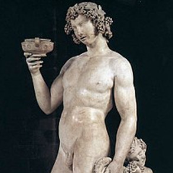
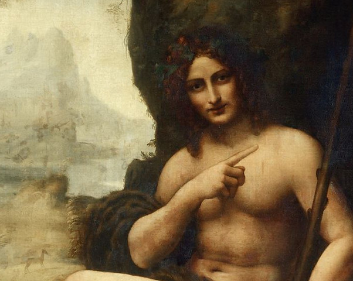
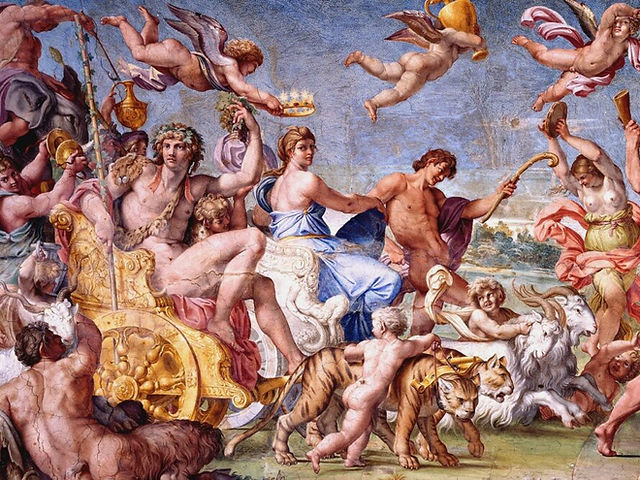
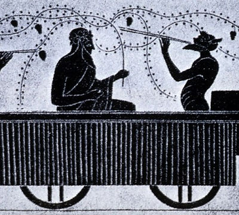
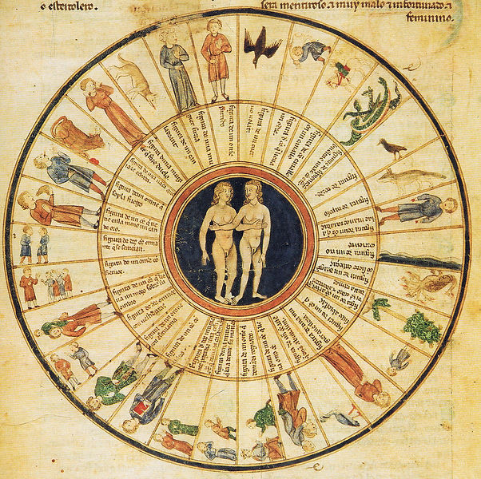
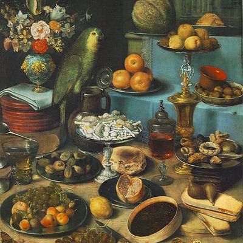
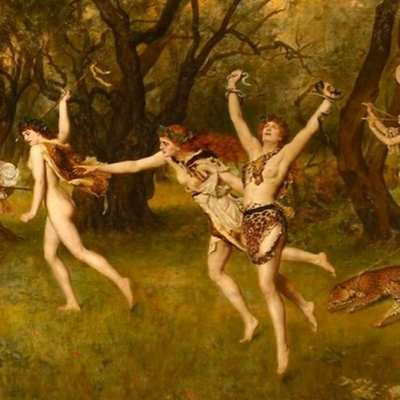

Spiritual gathering place
A sanctuary for the sacred things in life.

THE ANCIENT SPIRIT. A LIVING TRADITION.ART · THEATRE · FREEDOM
A sanctuary for the sacred things in life.
Welcome to the Church of Bacchus, a virtual church reviving the ancient religion of Dionysus.
Enter the story ↓AN OPEN INVITATION
This church is for supporters of art & theatre. For people who care about personal freedom and equality. A community of people who are curious about the mysteries of life and death and who believe in the Tradition of Criticism. Ancient mysteries and rites of Dionysus were attended by similar people.
Society often limits “god” to the idea of an omnipotent person or deified prophet. This ignores how gods can represent our spiritual connection to the world, manifested as an idea form within us. They can be our mystical guides and a collective source of creation.
The first and only official tenet of the church is, you do not talk about Church of Bacchus. Allow religious conversation to come up naturally. No proselytizing or buffeting people with your personal mystical beliefs.

THE BUILD PLAN
Throughout history, theaters have served as temples of Bacchus. Our vision is a modern Theatre of Bacchus, which will both produce and host theatrical works.
Initial donations will fund food truck giveaways, the planned main charitable operation of the church.
SERMON OF BACCHUS
Birdy discusses his observations about modern society, along with challenging emotional and spiritual topics.
THE MYSTERIES
The ancient tradition of Dionysus brings together theatre, nature and the mysteries of life. Art offers a way to explore our spiritual connection to the world.
For a scholarly history of this tradition, explore Brian Muraresku’s discussion of the Mysteries of Eleusis on The Practical Stoic Podcast.


A SIMPLE MISSION

A sanctuary for the sacred things in life.

Food truck giveaways.

Recycle wasted materials.
BACCHUS BLESSES THE GENEROUS
Support the church, the arts and the vision for the Theatre of Bacchus.
Contact the church for current donation details.
Ask about donating ↗Help sustain the work of the church.
Get in touch ↗Visit Patreon ↗